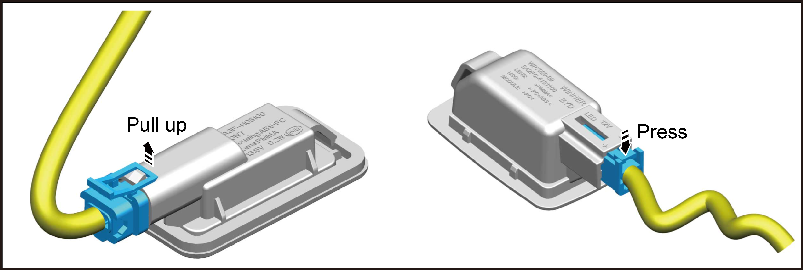
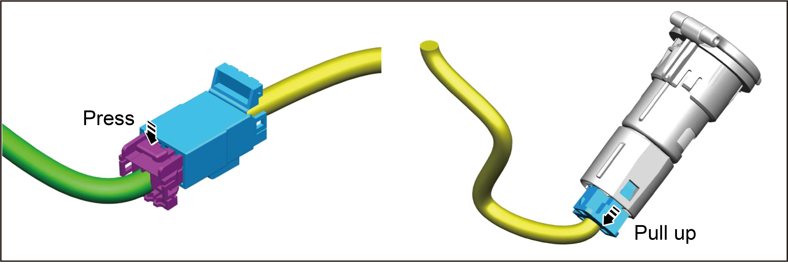
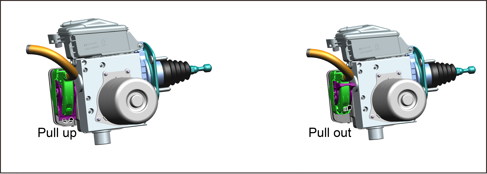

Common Connector Disconnection Methods
The types of wiring harness connectors commonly used for automobiles include locking-piece, slider-lock and rod-lock types. The removal and installation methods for these three types are described below.
-
Locking-piece type connector: It can prevent accidental loosening or disconnection, and can be disconnected by pressing or lifting the locking piece, as shown in the figure.
Reminder
When disconnecting the connector, do not pull the wiring harness or wire, so as to prevent part damage.
-
Slider-lock type connector: It can prevent incomplete locking, accidental loosening or disconnection. They are used in some systems and components (especially those related to OBD), and can be disconnected by pressing or pulling out the slider, as shown in the figure.
ReminderWhen disconnecting the connector, to prevent part damage, do not pull the wiring harness or wire, or damage the connector bracket.
-
Rod-lock type connector: It is used for some control units and control modules, super multiplexer adapters, etc. For connection, it must be confirmed that the rod is completely locked in place by moving the rod to the stop position to ensure secure connection, as shown in the figure.
ReminderBefore disconnecting or connecting such connectors, be sure to confirm that rods have been completely released (loosened) to avoid damage to connector housings or terminals.